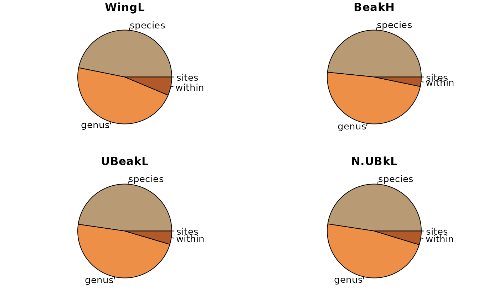
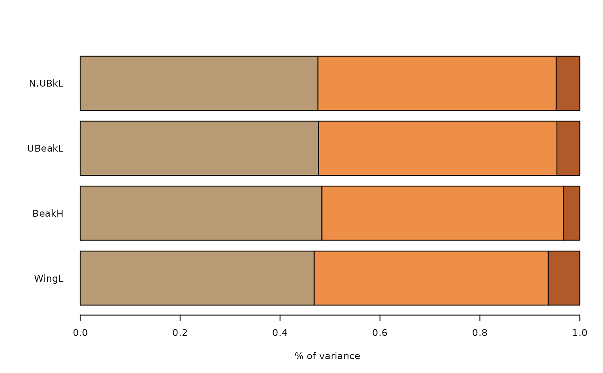

Variance partitioning accross nested scales
partvar.RdVariance partitioning accross nested scales using a decomposition (varcomp function) of variance on restricted maximum likelihood (REML) method (lme function). See Messier et al. 2010 for more information. barPartvar and piePartvar are associated plotting functions.
Usage
partvar(traits, factors, printprogress = TRUE)
barPartvar(partvar, col.bar = NA, ...)
piePartvar(partvar, col.pie = NA, ...)Arguments
- traits
Matrix of traits with traits in column
- factors
A matrix of factors with the first column corresponds to the higher level factor, the second row the second higher level factor and so on.
- printprogress
Logical value; print progress during the calculation or not.
- partvar
The result of the partvar function.
- col.bar
Vector of colors of bars
- ...
Any additional arguments are passed to the pie function.
- col.pie
Vector of color for pie.
Value
An object of class "partvar" corresponding to a matrix of variance values with traits in rows and nested factors in column.
References
Messier, Julie, Brian J. McGill, et Martin J. Lechowicz. 2010. How do traits vary across ecological scales? A case for trait-based ecology: How do traits vary across ecological scales? Ecology Letters 13(7): 838-848. doi:10.1111/j.1461-0248.2010.01476.x.
Examples
data(finch.ind)
# \donttest{
cond<-seq(1,length(sp.finch)*2, by = 2)
genus <- as.vector(unlist(strsplit(as.vector(sp.finch),"_"))[cond])
res.partvar.finch <- partvar(traits = traits.finch,
factors = cbind(sites = as.factor(as.vector(ind.plot.finch)),
species = as.factor(as.vector(sp.finch)), genus = as.factor(genus)))
#> The partvar function decomposes the variance accross nested scales. Thus choose the order of the factors very carefully!
#> Warning: All individuals with one NA ( 50 individual value(s)) are excluded for the trait 1 : WingL
#> [1] "25 %"
#> Warning: All individuals with one NA ( 396 individual value(s)) are excluded for the trait 2 : BeakH
#> [1] "50 %"
#> Warning: All individuals with one NA ( 668 individual value(s)) are excluded for the trait 3 : UBeakL
#> [1] "75 %"
#> Warning: All individuals with one NA ( 23 individual value(s)) are excluded for the trait 4 : N.UBkL
#> [1] "100 %"
res.partvar.finch
#> WingL BeakH UBeakL N.UBkL
#> sites 9.115560e-08 5.585495e-08 1.134778e-07 8.753975e-08
#> species 4.683656e-01 4.837630e-01 4.770527e-01 4.763556e-01
#> genus 4.683653e-01 4.837618e-01 4.770511e-01 4.763569e-01
#> within 6.326897e-02 3.247506e-02 4.589606e-02 4.728743e-02
#> attr(,"class")
#> [1] "partvar"
oldpar<-par()
par(mfrow = c(2,2), mai = c(0.2,0.2,0.2,0.2))
piePartvar(res.partvar.finch)

par(oldpar)
#> Warning: graphical parameter "cin" cannot be set
#> Warning: graphical parameter "cra" cannot be set
#> Warning: graphical parameter "csi" cannot be set
#> Warning: graphical parameter "cxy" cannot be set
#> Warning: graphical parameter "din" cannot be set
#> Warning: graphical parameter "page" cannot be set
barPartvar(res.partvar.finch)

# }